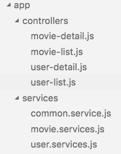

Created by Martin Surynek
Coding conventions are style guidelines for programming. They typically cover:
Naming convention.
Create files structures by feature vs by type.
The code is composed of a set of highly decoupled, distinct pieces of functionality stored in modules.
Syntax to write JavaScript in modular way and solve file ordering issue.
The CommonJS group defined a module format to solve JavaScript scope issues by making sure each module is executed in its own namespace.
It’s the next version of JavaScript, and it has some great new features.